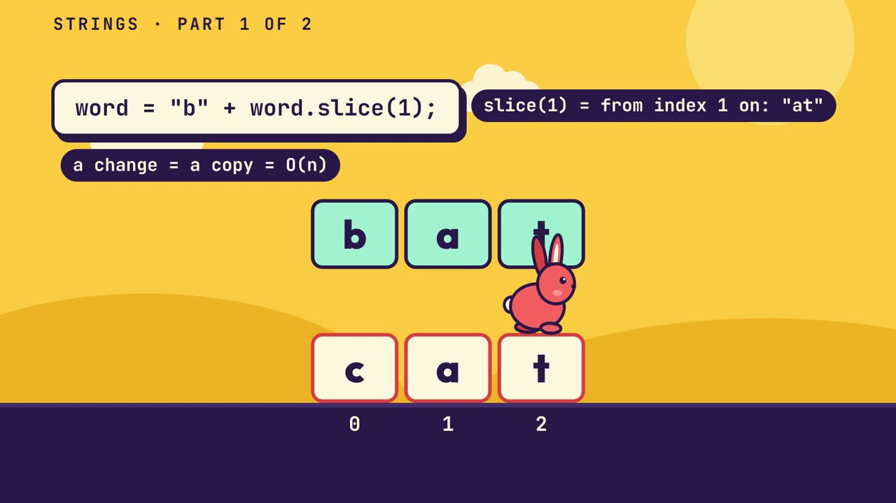
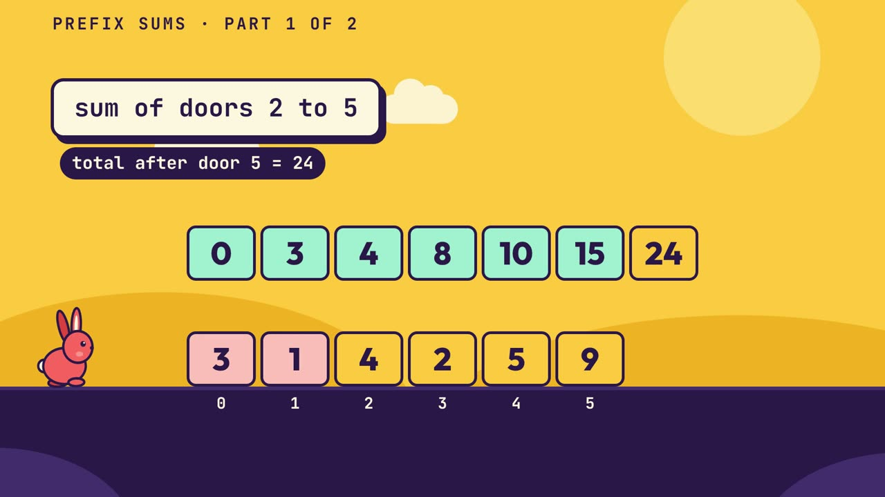
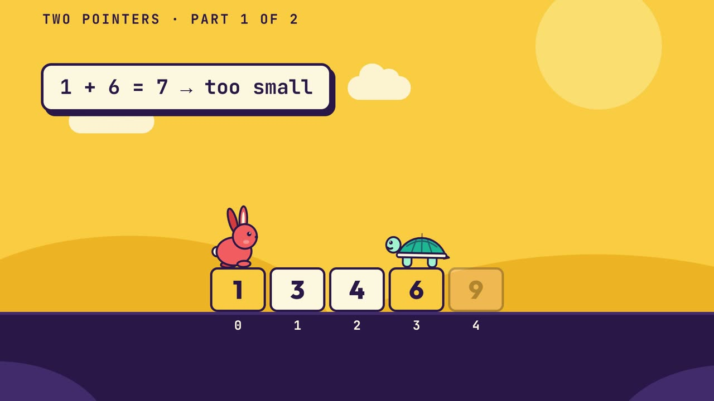
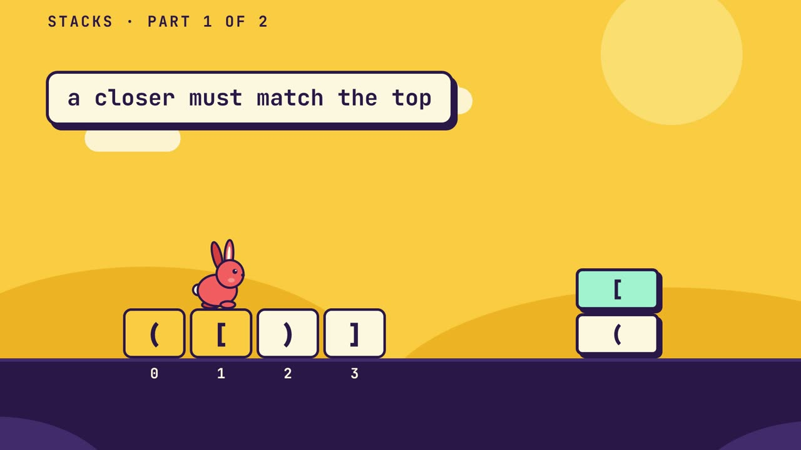
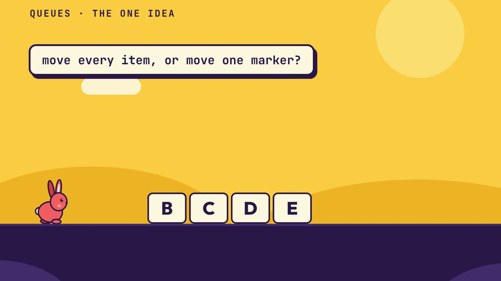
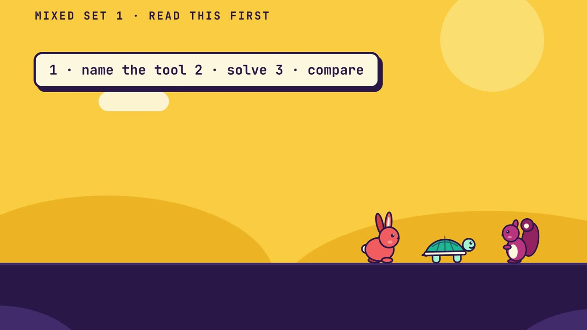
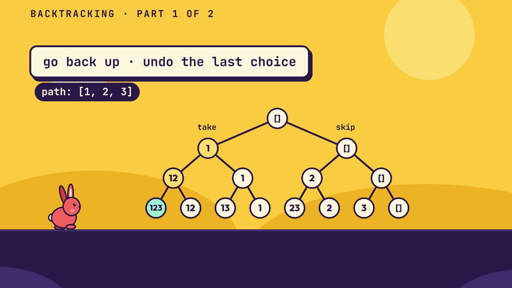
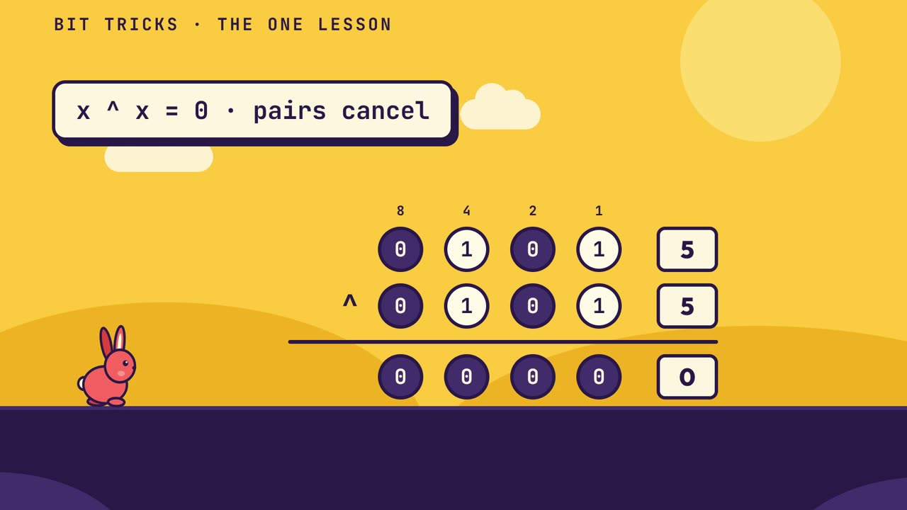

Data structures and algorithms, made visual
Short cartoons explain one idea at a time. Each one stops to ask what you think happens next. Then you write the code yourself, right on the page.
Free · nothing to install · 459 short videos · 183 coding puzzles
A sample lesson · 1 min 34 s
Pick the line that sounds like you.
Six parts. Each builds on the one before. Go in order, or jump in anywhere. Your progress is saved on this device.
How a computer runs your code, and how to count the work it does.
Arrays, strings, hash maps, and the tricks that walk a row once instead of many times.










Trust the smaller call, halve the search, and sort so the rest is easy.
Things inside things: walk them deep or level by level, keep them ordered, or always take the smallest.
Things joined to things: explore, order, merge groups, and find the cheapest way.
Try every choice and take it back, or answer the small questions first and reuse them.




Optional. For when the code itself gets in the way: tracing, copies, turning words into steps, testing. No algorithms yet.
A short cartoon shows one idea with Pip, Moss and Hazel.
It stops and asks what happens next. A wrong guess costs nothing.
Solve a small puzzle on the page. Hints are there when you are stuck.
See the answer run line by line, and where it is used in real software.
Burrow Hill · 26 chapters · 362 minutes of animationShared privately, please do not forward